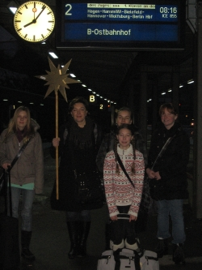
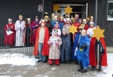
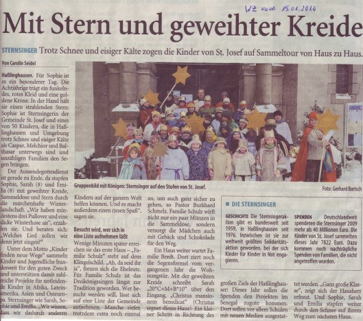
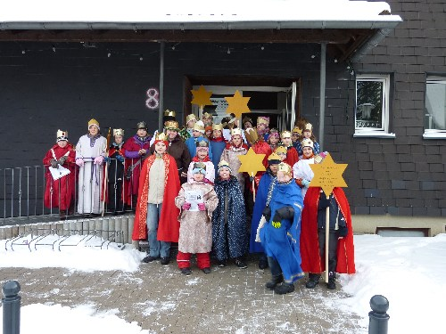
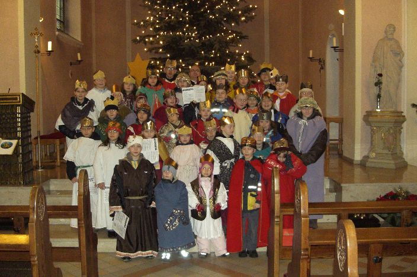

Vier Sternsingerinnen bei Kanzlerin Angela Merkel
{kind=link}
Unsere vier Sternsingerinnen Julia, Laura, Uschi und Vicky sind ganz stolz, dass sie unser Bistum Essen beim Empfang der Sternsinger im Berliner Kanzleramt vertreten durften.
Be 06.01.2011
Unsere vier Sternsingerinnen Julia, Laura, Uschi und Vicky sind ganz stolz, dass sie unser Bistum Essen beim Empfang der Sternsinger im Berliner Kanzleramt vertreten durften.
Be 06.01.2011
|  | |
| Julia Stratmann, Margarte Kirchner, Laura Kirchner, Uschi Wodausch und Vicky Fröschke (v.li.) auf dem Wuppertaler Hauptbahnhof vor ihrer Abfahrt nach Berlin |
Am Dienstagmorgen (04.01.2011) sind aus unserer erfreulich großen Schar der Sternsingerinnen und Sternsinger Laura, Uschi, Vicky und Julia nach Berlin abgefahren, um im Bundeskanzleramt von Bundeskanzlerin Angela Merkel empfangen zu werden und unser Ruhrbistum angemessen zu vertreten.
Einen Bericht hierzu finden Sie auch auf der Homepagseite des Bistums Essen und in der WAZ-online vom 05.01.2011.
Zur Dokumentation der Aussendungsfeier vom 30.12.2010 im Essener Dom gelangen Sie, indem Sie die Verlinkung am Anfang dieses Satzes anklicken.
Be 05.01.2011
| Sternsingerinnen aus unserer Gemeinde St. Josef bei der Auftaktveranstaltung in Essen | |
| Am Donnerstag, den 30. Dezember 2010 trafen sich zur Auftaktveranstaltung der Sternsingeraktion 2011 in Essen Sternsingerinnen und Sternsinger aus der ganzen Bundesrepublik. Nach der Begrüßung im Dom ging es in einem gemeinsamen Marsch durch die Essener Innenstadt zum Colosseum. Dort fand ein Wortgottesdienst mit Bischof Dr. Franz-Josef Overbeck statt.
Im Anschluss daran konnten die Kinder einen Imbiss einnehmen und sich an unterschiedlichen Workshops beteiligen. Christian Waschke
|
Weitere Informationen über die Auftaktveranstaltung und verschiedene Videos finden Sie auf der Homepageseite des Kindermissionswerks.
Be 04.01.2011
Sternsinger bringen traditionell den Segen ins Kanzleramt.
Dabei vertreten kleine Könige aus Haßlinghausen in Berlin das Bistum Essen.
Vier Kinder aus der katholischen Gemeinde St. Josef in Sprockhövel-Haßlinghausen vertreten am Mittwoch, 5. Januar, ab 11 Uhr das Bistum Essen beim Mehr…
|  | Die Sternsinger von St. Josef werden sich auch im Januar 2011 wieder auf den Weg machen, um ihren Segengruß in die Wohnungen der Menschen zu tragen.
Jungen und Mädchen sind eingeladen, an dieser guten Aktion teilzunehmen. |
| Ein Teil der Sternsinger 2010 |
Weil noch „kein Meister vom Himmel gefallen ist“, wie uns eine Redensart sagt, müssen wir natürlich die Lieder üben, die in den Häusern und Wohnungen der Besuchten gesungen werden sollen. Außerdem erfahren wir, was mit dem Erlös der Aktion geschehen wird.
Die Vorbereitungstreffen finden statt am:
| Tag | Datum | Zeit | Ort |
| Freitag | 10.12.2010 | 16.00 Uhr bis 17.00 Uhr | im Gemeindeheim |
| Samstag | 18.12.2010 | 10.00 Uhr bis 12.00 Uhr | im Gemeindeheim |
Die Sternsinger sind unterwegs zu den Menschen in unserer Gemeinde
St. Josef am:
| Tag | Datum | Beginn | Ziel |
| Donnerstag | 06.01.2011 | Haßlinghauser Geschäfte u. Bürgermeister | |
| Samstag | 08.01.2011 | 10.30 Uhr | Häuser und Wohnungen |
| Sonntag | 09.01.2011 | 11.15 Uhr | Häuser und Wohnungen |
Be 02.12.2010
In der WZ vom 15.01.2010 fand unsere Sternsingeraktion das folgende Presseecho.
|  | |
| Klicken Sie hier, um den Zeitungsartikel als PDF-Datei (1,5 MB) zu erhalten. |
AKTION DREIKÖNIGSSINGEN 2010
Kinder finden neue Wege – Utub yoon bu bees
|  | |
| Ein Teil unserer fleißigen Sternsingerinnen und Sternsinger 2010 |
Die Sternsinger unserer Gemeinde St Josef in Haßlinghausen sind ganz schön stolz: 7.861,97 Euro kamen bei ihrer diesjährigen Mehr…
Am Samstag, den 9. und am Sonntag, den 10. Januar 2010
werden sich unsere Sternsinger wieder auf den Weg machen, um Ihnen ihren Gruß – „CHRISTUS MANSIONEM BENEDICAT“ – „Christus segne euer Haus“ zu bringen.
Dabei bitten unsere Sternsinger um eine Spende, mit deren Hilfe die Lebensumstände der Kinder in der ganzen Welt verbessert werden sollen. Mehr…
Ganz herzlich laden wir alle Kinder und Jugendlichen
|  | |
| Sternsinger 2008 |
unserer Gemeinde ein, sich an der Sternsingeraktion 2010 zu beteiligen. Mehr…
In der Westdeutschen Zeitung (WZ) vom 16.01.2009, Ausgabe Sprockhövel, ist der als PDF-Datei angefügte Bericht über unsere diesjähreige Sternsingeraktion veröffentlicht worden.
Ein herzlicher Dank gilt einerseits den 37 Sternsingerinnen und Sternsingern für ihre kräftezehrende Arbeit, andererseits aber auch den Besuchten für deren großartige Spendenfreudigkeit.
Be 16.01.2009
{kind=link}